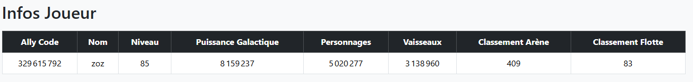
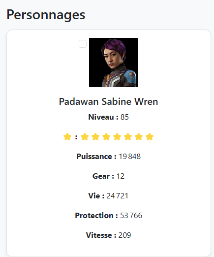
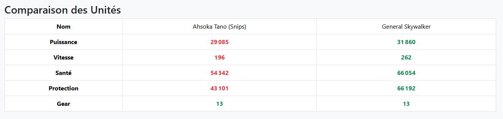
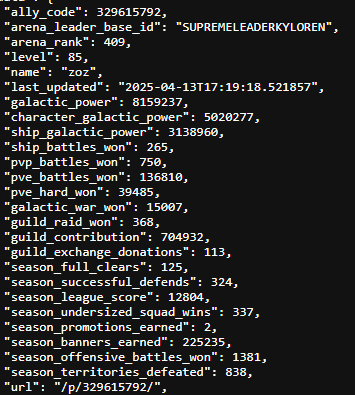
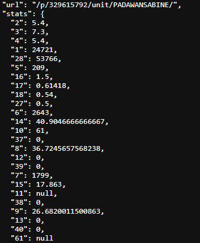

Projet SWGOH API - Info Joueur
Description
SWGOH Galaxy est une plateforme web dédiée au jeu mobile Star Wars: Galaxy of Heroes. Elle permet aux joueurs de consulter facilement les statistiques détaillées de leur compte en saisissant leur code allié.
Grâce à l'intégration d'API communautaires comme api.swgoh.gg, le site affiche des informations telles que la puissance galactique, les personnages et vaisseaux possédés, les classements en arène, et bien plus encore.
Il est également possible de rechercher des unités, comparer plusieurs personnages ou vaisseaux, et mieux planifier votre progression dans le jeu.
Langages utilisés
-
 HTML : utilisé pour structurer le contenu du site, définir les titres, paragraphes, images, et liens.
HTML : utilisé pour structurer le contenu du site, définir les titres, paragraphes, images, et liens.
-
 CSS (via Bootstrap 5) : permet de styliser l’interface avec des composants réactifs et modernes pour une expérience fluide sur tous les écrans.
CSS (via Bootstrap 5) : permet de styliser l’interface avec des composants réactifs et modernes pour une expérience fluide sur tous les écrans.
-
 JavaScript : utilisé pour ajouter des fonctionnalités interactives, comme les filtres dynamiques, les événements au clic, ou la navigation dynamique entre les unités.
JavaScript : utilisé pour ajouter des fonctionnalités interactives, comme les filtres dynamiques, les événements au clic, ou la navigation dynamique entre les unités.
-
 PHP : utilisé côté serveur pour interroger l'API SWGOH et récupérer les données liées au code allié du joueur.
PHP : utilisé côté serveur pour interroger l'API SWGOH et récupérer les données liées au code allié du joueur.
-
 Java : utilisé pour des traitements ou intégrations backend.
Java : utilisé pour des traitements ou intégrations backend.
-
 JSON : format utilisé pour échanger les données entre le serveur et le navigateur, en particulier pour structurer les infos des joueurs.
JSON : format utilisé pour échanger les données entre le serveur et le navigateur, en particulier pour structurer les infos des joueurs.
Fonctionnalités principales
-
Affichage du profil joueur : nom, niveau, puissance galactique, guilde, rangs en arène et flotte.
-
Liste des personnages : niveau, étoiles, équipement, vitesse, santé, protection et gear.
-
Liste des vaisseaux : mêmes informations que les personnages, adaptées aux unités de flotte.
-
Comparaison d’unités : compare plusieurs unités sélectionnées sur des statistiques clés (vitesse, puissance, santé...).
-
Recherche dynamique : permet de filtrer rapidement les unités via un champ de recherche intégré.
-
Navigation claire : possibilité de basculer rapidement entre les sections "Personnages" et "Vaisseaux".
Affichage des données du joueur
Affichage du profil complet : les joueurs peuvent saisir leur code allié pour afficher :
-
- - Puissance galactique totale
- - Classements en arène et flotte
- - Puissances totales des personnages et vaisseaux
- - Niveau , nom et ode allié du joueur

Cette vue d’ensemble vous aide à suivre votre progression dans le jeu et à vous situer face aux autres joueurs. Un outil essentiel pour analyser vos performances globales.
Affichage des statistiques d’un personnage
Consultation des statistiques : chaque personnage du joueur peut être consulté en détail :
-
- - Niveau, puissance, gear
- - Vitesse, santé, protection
- - Rareté (étoiles) et équipements

Ces données permettent une analyse approfondie des unités pour optimiser leur efficacité en combat. Vous pouvez facilement identifier les personnages à améliorer en priorité.
Comparaison entre unités
Comparaison côte à côte : comparez deux unités (personnages ou vaisseaux) selon :
-
- Puissance, vitesse, santé
- Protection, gear
- Visuels dynamiques avec mise en couleur des stats (vert = meilleur, rouge = plus faible)

Cette fonctionnalité est idéale pour choisir les meilleures unités à intégrer dans vos équipes. Le système de couleurs facilite une lecture rapide et intuitive.
Récupération des données avec l'API
Afin de fournir des données actualisées à la plateforme SWGOH Galaxy, une API personnalisée en PHP a été créée. Cette API interroge directement l’API communautaire SWGOH.gg, qui contient des informations détaillées sur les profils des joueurs du jeu Star Wars: Galaxy of Heroes.
En entrant leur code allié, les utilisateurs peuvent consulter des statistiques sur leurs personnages, vaisseaux, ainsi que des informations globales telles que la puissance galactique, les rangs en arène, et plus encore.
Fonctionnement du fichier api.php
Le fichier PHP api.php est responsable de l'interaction avec l'API SWGOH.gg. Il récupère le code allié envoyé par le client, puis interroge l'API SWGOH pour obtenir les données du joueur. Voici le processus détaillé, étape par étape :
1. Requête entrante (POST)
Le code allié est envoyé depuis le client, généralement via une requête AJAX ou fetch() en format JSON. Cette requête contient l'identifiant unique du joueur, ce qui permet à l'API de cibler les données spécifiques du joueur.
2. Appel à l'API SWGOH.gg
Une fois le code allié reçu, une requête est envoyée à l'URL suivante :
https://swgoh.gg/api/player/{ally_code}/
Cela permet de récupérer les données du joueur à partir de l'API SWGOH.gg en format JSON.
3. Traitement des données
Une fois la réponse de l'API obtenue, les données sont extraites et triées en fonction du type d’unité, comme les personnages et les vaisseaux. Les informations sont ensuite formatées et préparées sous forme de données JSON pour une utilisation facile.
4. Réponse JSON
Le fichier PHP renvoie une réponse JSON structurée contenant les informations du joueur et de ses unités. La réponse contient les éléments suivants :
player_info : informations générales sur le joueur (niveau, puissance galactique, classements en arène, etc.).characters : liste des personnages du joueur avec leurs statistiques détaillées (niveau, étoiles, équipement, etc.).ships : liste des vaisseaux avec leurs statistiques détaillées.
L’API SWGOH.gg
L’API SWGOH.gg est une API communautaire gratuite qui fournit des données détaillées sur les joueurs du jeu Star Wars: Galaxy of Heroes. Elle offre des informations sur les unités (personnages et vaisseaux), les statistiques, les classements en arène, et bien plus.
L’API ne nécessite pas d'authentification et est accessible librement. Elle permet aux développeurs de récupérer les données publiques des joueurs en utilisant leur code allié.
- Accès aux profils des joueurs : permet de consulter les informations détaillées d’un joueur, comme la puissance galactique, les personnages, et les vaisseaux.
- Récupération des statistiques : stats détaillées sur les unités (niveau, étoiles, équipement, etc.).
- Facilité d’intégration : l’API est simple à utiliser, avec des réponses en JSON pour une intégration rapide dans des projets web.
Pour plus d'informations sur l'API, consulte la documentation officielle : https://swgoh.gg/api/
Données JSON fournies par l'API SWGOH.gg
Lorsque le joueur saisit son code allié, une requête est envoyée à l'API SWGOH.gg qui retourne une structure JSON complète avec toutes les données de son compte.
Ce JSON comprend deux parties principales :
player_info : Contient les informations globales du joueur telles que :

L'image ci-dessus montre un extrait de la section player_info : informations générales sur le joueur.

Ci-dessus, un aperçu de la structure des unités (personnages ou vaisseaux), avec des données comme la vitesse, la santé, les capacités, et le niveau d’équipement.
Avec comme exemple les stats du personnage : Padawan Sabine Wren.
Explication des Statistiques dans la Section units
| Statistique |
Code |
Explication |
| Santé |
1 |
La santé totale de l'unité. Cela représente les points de vie de l'unité avant qu'elle ne soit éliminée. |
| Vitesse |
2 |
La vitesse de l'unité, affectant le nombre de tours qu'elle peut effectuer dans le combat. |
| Dégâts de base |
3 |
Les dégâts de base que l'unité inflige avec ses attaques normales, avant toute modification par des effets externes. |
| Puissance |
4 |
La puissance totale de l'unité, utilisée pour calculer son efficacité en combat. |
| Vitesse modifiée |
5 |
La vitesse modifiée de l'unité après l'application de divers buffs ou debuffs. |
| Protection |
6 |
La protection est une ressource supplémentaire avant que les dégâts n'affectent la santé de l'unité. |
| Armure |
7 |
L'armure de l'unité, qui réduit les dégâts physiques qu'elle subit. |
| Précision |
8 |
La probabilité que l'unité touche l'adversaire avec ses attaques. Plus la précision est élevée, moins l'unité est susceptible de rater ses attaques. |
| Résistance |
9 |
La capacité de l'unité à résister aux effets de debuff, comme la réduction de vitesse ou l'incapacité de se déplacer. |
| Chance de coup critique |
10 |
La probabilité que l'unité effectue un coup critique, qui inflige des dégâts supplémentaires par rapport aux attaques normales. |
| Dégâts critiques |
11 |
Les dégâts supplémentaires infligés lorsqu'un coup critique se produit. |
| Évasion |
12 |
La capacité de l'unité à éviter les attaques ennemies. |
| Régénération de santé |
14 |
La quantité de santé que l'unité régénère par tour. |
| Attaque |
15 |
L'attaque globale de l'unité, influençant ses dégâts dans le jeu. |
| Ténacité |
16 |
La capacité de l'unité à résister aux debuffs et altérations de statut. |
| Évitement des coups critiques |
17 |
La capacité de l'unité à éviter les coups critiques ennemis. |
| Dégâts spéciaux |
27 |
Les dégâts infligés par des attaques spéciales ou des capacités spéciales. |
| Protection bonus |
28 |
Valeur supplémentaire de protection qui peut être appliquée en fonction des buffs et autres effets. |
| Bonus chance de coup critique |
37 |
Bonus supplémentaire à la chance de réaliser un coup critique, souvent attribué par des buffs. |
| Bonus de précision |
38 |
Bonus supplémentaire à la précision, souvent attribué par des buffs. |
| Bonus de vitesse |
39 |
Bonus de vitesse que l'unité peut recevoir, influençant sa rapidité dans le combat. |
| Bonus d'armure |
40 |
Bonus d'armure que l'unité peut recevoir, améliorant sa capacité à encaisser les dégâts physiques. |
| Bonus de santé |
61 |
Bonus de santé supplémentaire, généralement attribué par des buffs ou des capacités spéciales. |
Ces données sont exploitées côté client pour l’affichage dynamique dans les différentes sections du site (profil, unités, comparaisons, etc.).